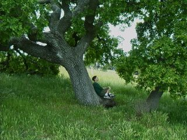

| Description of the Population Model |
The Physical System. We will start by describing the physical system that we will be working with. Try to use your imagination to feel that you are part of the system being analyzed. As described before, we will be working in a forest full of oak trees. Imagine yourself in one such forest. You are all alone, walking among some very huge oak trees. You notice that some trees are smaller both in diameter as well as in height. As a matter of fact, some of the trees look like they sprouted not that long ago, as they are almost as tall as you are. As you walk, you step on many leaves that have fallen from the trees and enjoy the sound that you produce as you step on them. As you concentrate on your steps, you notice the feeling of some hard little rocks. As you hunch down to grab one, you realize that they are not little rocks but acorns. You look up to see where they came from and you immediately see many of them hanging from the branches of the oak trees. You continue walking for a few minutes, with oak trees all around you, until you decide to sit down, lean your back on one of the trees, and simply enjoy the great view and wonderful fragrance of the forest. It is so pleasant, so quiet, that you wish you could stay here forever.

It is a bit dark because the canopy of the big trees, with its lush branches, leaves very little room for the sun rays to penetrate into the area where you are sitting. All of a sudden you hear a hurried shrill sound. You quickly turn your head towards the unexpected noise to try to find out where it came from, and see a very cute little gray squirrel going at a very fast speed up the trunk of one of the trees. Within a few seconds the squirrel disappears inside a hole high up in the tree. You keep looking at the hole hoping to see the squirrel again. A few moments later you see the squirrel's head pop out of the hole with one of the acorns in its mouth.
After some time of observing all that is going on around you, you notice that squirrels keep coming down the trees, grabbing acorns, and quickly taking them up to their dwellings. You are enjoying seeing them hard at work, when again there is a startling noise. This time it comes from up above in the air. When you see a huge red-tail hawk, you very quickly recognize the noise to be the fluttering of its unexpectedly big wings. Almost at the same time that you see the hawk landing on one of the tree branches, you realize that you are not the only one that noticed it. All the squirrels disappeared as if by magic. They know what the hawk is after!
The Population Computer Model. The computer model implemented for this lesson does not exactly represent the forest that was described in the previous section. Even though it attempts to model the real physical system accurately, its main purpose is to promote understanding of the relationship and interdependence of the three species (oak trees, squirrels, and hawks) by allowing you to make choices and decisions on how to set things up to control the model. In using it you will learn interesting facts about the different species. You will learn additional facts from reading the different fact pages. In this model you begin with a forest; except that it is not a forest because there are no trees at all, so you really start with empty ground that measures 600 feet by 250 feet. You start by deciding three things: the number of oak trees that you want to plant, the amount of water to use for watering (of course, this is rainfall water, not tap water), and the nutrients needed for proper growth. Next, you can decide how many gray squirrels are born or introduced into the area and when. Lastly, you decide how many red-tail hawks are born and when.
You make all of these decisions, which in computer model lingo is referred to as defining the initial conditions for the system, and you then let time advance. As time moves forward, you can dynamically see the trees begin to grow as well as the squirrels and hawks appear, reproduce and grow, etc. Depending on the initial conditions you might end up with nothing at all, i.e. none of the species might grow at all. The whole idea is that by interacting with the model and reading the facts, you will be able to learn what it takes to evolve the forest and its inhabitants into well balanced populations. Since, as mentioned before, the model is not intended to be 100% accurate, throughout the lesson and the facts pages you will also learn some of the real factors and conditions that are not being used by the model.
The last step before starting to work with the model is reading the specific instructions on how to use the model. Proceed to the next page to read these instructions. Right after the instructions page you will be able to start working with the model.
Last Updated:
Arcytech
Java Home
Page
Provide
Feedback